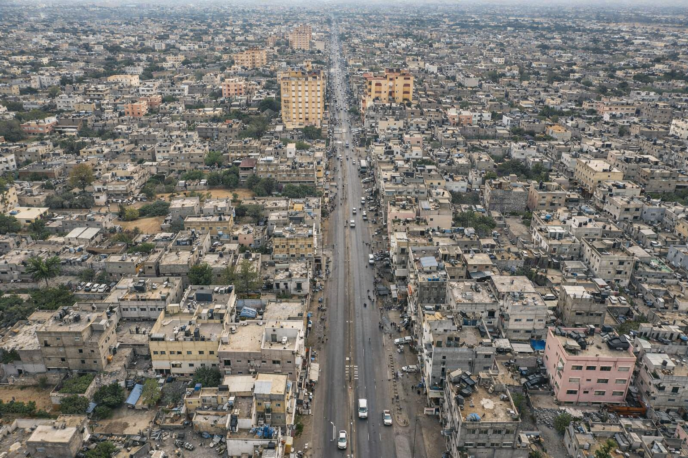

نبذة عن المخيم
مخيم المغازي
مخيم المغازي: مخيم المغازي يقع على جزء من أنقاض قرية داثن القديمة أو ” الدميثة” حيث ذكرها ياقوت الحموي بأنها قرية من قرى غزة هزم فيها الكفار سنة 12هـ حيث أوقع المسلمون بالروم أول هزيمة فيهم وقد أطلق عليها “الدميثة” وفي الوقت الحالي يطلق عليها المغازي نسبة إلى مجاهد اسمه “المغزا” يوجد له ضريح في المنطقة “المصدر حالياً” أسفل شجرة السدر بجانب مسجد المصدر، وبالقرب منها أثار لأساسات وحجارة قديمة تشير لأثار قرية كانت تحتل مساحة لا تقل عن سبعين دونماً يحيط بها خزانات “هرابات مياه” تطوق القرية القديمة من الشمال والغرب وكانت باقية لفترة قريبة كانت تمول القرية بالمياه. كانت قرية داثن قد لعبت دور نقطة الدفاع الأمامية لمدينة “الداروم” ديرالبلح حالياً من جهة الشرق.
نشاة مخيم المغازي: استقبل القطاع جزءاً كبيراً من النازحين “اللاجئين” الذين توزعوا في مختلف مدن وقرى القطاع، في المساجد والمدارس والكنائس، أو لدى المعارف والأقارب، وفي ثكنات سابقة للجيش البريطاني وحتى الأرض الفضاء (العراء) وكانت نشأة المغازي سنة 1949م على أرض مساحتها 295 دونم تعود ملكيتها لعائلة المصدر وعائلة أبو زايد وأصبح المخيم مأوى 9000 لاجئ أجبروا على الخروج من مواطنهم في وسط فلسطين وجنوبه بعد حرب عام 1948، وفي البداية عملت جمعية الأصدقاء الأمريكية (الكويكرز) على إنشاء المخيمات في مناطق تواجدها الآن وأعطيت أسماء المدن المجاورة لها، وقد قامت الجمعية المذكورة بتوزيع الخيام على اللاجئين، واستمرت في الإشراف على مخيماتهم حتى تشكيل وكالت الغوث الدولية، بناء على قرار الجمعية العامة للأمم المتحدة رقم( 302) الصادر في 6 كانون الأول/ عام 1949م. وباشرت الوكالة عملها رسميا في أيار “1950” ومع بدء الوكالة أعمالها، كان اللاجئون يقيمون في الخيام التي وزعتها جمعية الكويكرز، وشهد القطاع عام 1950 شتاء قارصاً عاصفاً لم تصمد أمامه الخيام. فاقتلعتها الرياح تاركة سكانها بلا مأوى. وعندها رأت الوكالة عدم جدوى استخدام الخيام، ورأت ضرورة إسكان اللاجئين في بيوت مبنية من الطوب والحجر بدل الخيام، ونظراً لأنها لم تكن بيوتا أو منازل بالمعنى الدقيق للكلمة فقد أطلق عليها اسم “مأوى” وزودت الوكالة اللاجئين بالغرف أو المواد اللازمة لإقامتها وقد بنت وكالة الغوث في ذلك الحين حوالي “48 ألف” ماوى في ثمانية مخيمات بيوت صغيرة من الطين مسقوفة بالبوص وسعف النخيل، ومن ثم تطور الأمر واستبدل السقف بالقرميد في بدايت الستينات ، وبدا بعد ذلك التحول في السبعينات من قرميد إلى إسبست ثم البناء المسلح و يشرف على المخيم وعلى تقديم الخدمات فيه وكالت الغوث. في ذلك الوقت كان قطاع غزة تحت الإدارة المصرية حتى قيام حرب عام 1967م واحتلال قطاع غزة من قبل الجانب الإسرائيلي والمغازي كانت جزء من ذلك. وبقى مخيم المغازي يتوسع أفقيا بسبب الزيادة السكانين حتى قدوم السلطة الوطنية.
موقع المغازي: يقع مخيم المغازي في محافظة الوسطى وهي من محافظات قطاع غزة وهو أحد مخيمات اللاجئين الثمانية الموجودة في محافظات قطاع غزة. ويبعد عن مدينة غزة جنوباً 14كم ويقع على الجانب الشرقي للشارع الرئيسي لقطاع غزة وهو شارع صلاح الدين.
المساحة: بلغت مساحة مخيم المغازي في أوائل إنشائه بعد عام 1948 (295 دونم) واستمر التزايد السكاني إلى ما قبل عام 1996 ، (1800 دونم) ، ومع قدوم السلطة وما رافقه من استقرار نسبي في الأوضاع وتزايد سكاني وعودة البعض من دول الخارج أصبحت مساحة المخيم في الوقت الحالي (3005 دونم) أي (3 كيلو متر مربع) . منها 44,4%سكنية ، 17,3% زراعية ، صناعية 3%، مباني عامة 2,7% ، تجارية 8,8%، تطوير مستقبلي 9,6%، ارض خضراء 3,2%، حرم السكة الحديد 08,%، طرق مفتوحة %9.30.
الحدود يحد مخيم المغازي من الشمال مخيم البريج بحدود يقدر طولها ( 2200متر) ويحده من الجنوب قرية المصدر بحدود ( 2200 متر) ومن الغرب قرية الزوايدة ويفصل بين المغازي وقرية الزوايدة شارع صلاح الدين الشارع الرئيسي لمحافظات غزة بحدود طولها (1525 متر) ، ويحد مخيم المغازي من الشرق خط الهدنة أراضي 48 بحدود طولها (500 متر) لذلك أصبح شكل مخيم المغازي شكل غير منتظم.
السطح: أرض مخيم المغازي هي جزء من أراضي قطاع غزة التي تتميز بسهولتها وقلت ارتفاعاتها وهي جزء من السهل الساحلي الفلسطيني الكبير ومع ذلك تتميز أراضي مخيم المغازي بارتفاع عن مستوى سطح البحر في منطقة شارع صلاح الدين مدخل المخيم بارتفاع قدره (21 متر) عن مستوى سطح البحر ويبلغ أقصى ارتفاع لأراضى المخيم (78متر) فوق مستوى سطح البحر وذلك شرق المغازي في منطقة السعايده. وهذا يؤدي إلى انحدار تدريجي في الأرض ناحية الغرب ناحية شارع صلاح الدين.
أسواق المخيم
أسواق مخيم المغازي
تُعد أسواق مخيم المغازي من المراكز الحيوية في المحافظة الوسطى بقطاع غزة، حيث تخدم سكان المخيم والمناطق المجاورة يوميًا.
أبرز ملامح الأسواق:
السوق المركزي: يضم محال الخضار والفواكه، اللحوم، المواد التموينية، والمستلزمات المنزلية.
المحال التجارية الصغيرة: تنتشر على طول الشوارع الرئيسية، وتوفر الملابس، الأحذية، الأدوات الكهربائية، والقرطاسية.
الأسواق الشعبية: تُقام في أيام محددة بأسعار مناسبة، خاصة في أوقات الذروة والمواسم.
تتميز الأسواق بطابعها الشعبي وحركتها النشطة، خاصة في الفترات المسائية وقبل المناسبات والأعياد، حيث تشهد إقبالًا واسعًا من الأهالي.